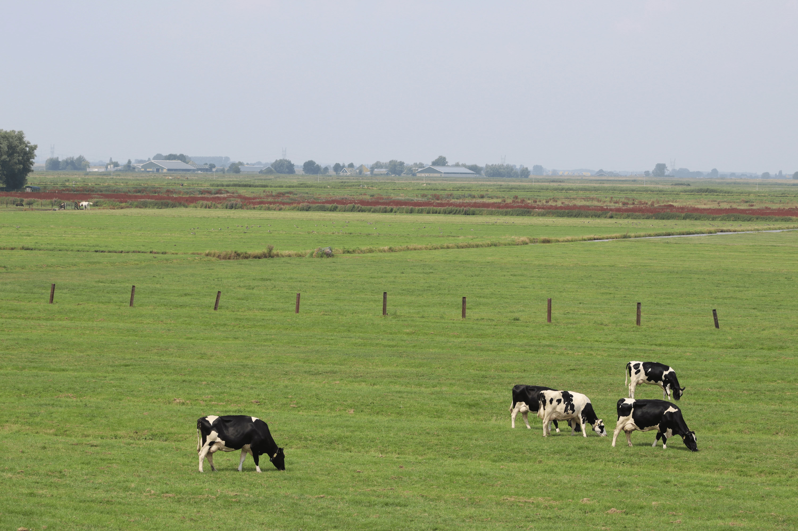

Nowoczesny sprzęt w sprzedaży lub leasingu — z dofinansowaniem do 65% i pełną obsługą

Oferujemy dwa sposoby nabycia sprzętu — sprzedaż bezpośrednią z możliwością zwrotu do 65% z ARiMR, lub leasing z niskim wkładem własnym i wygodnymi ratami miesięcznymi.
Nie wiesz co wybrać? Bezpłatnie przeanalizujemy Twoją sytuację i doradzimy najkorzystniejsze rozwiązanie.
Umów bezpłatną konsultacjęNowoczesny sprzęt dopasowany do Twoich możliwości finansowych
Kupujesz maszynę, my pomagamy złożyć wniosek o dofinansowanie ARiMR. Po akceptacji ARiMR zwraca Ci do 65% kosztów zakupu bezpośrednio na konto.
Resztę zwraca ARiMR.
Rozkładasz koszt na wygodne raty. Sprzęt pracuje i zarabia od pierwszego dnia — raty spłacają się same z przychodów z maszyny.
Niski wkład własny, korzyści podatkowe.
Przy zakupie bezpośrednim możesz odzyskać znaczną część kosztów inwestycji
Sprawdzamy czy Twoje gospodarstwo kwalifikuje się do dofinansowania i jaki program jest dla Ciebie najlepszy.
nic nie płaciszPomagamy skompletować dokumenty i złożyć wniosek do ARiMR. Znamy procedury — nie zgubisz się w papierologii.
zwrot do 65%Po pozytywnej decyzji ARiMR kupujesz maszynę. Dostarczamy i instalujemy sprzęt w Twoim gospodarstwie.
dostawa i instalacja w cenieNie masz gdzie postawić automatu? Kompleksowo zajmujemy się budową pawilonu — załatwiamy producenta, projekt i montaż. Żadnych formalności po Twojej stronie.
pod kluczARiMR zwraca Ci do 65% kosztów zakupu bezpośrednio na konto. Cały proces trwa zazwyczaj kilka miesięcy.
pieniądze wracają do CiebieNie znikamy po sprzedaży. Regularne przeglądy, szybkie naprawy, dostęp do części zamiennych przez cały czas.
umowa serwisowaProwadzisz gospodarstwo rolne i chcesz zakupić nowy sprzęt zwiększający wydajność produkcji.
Do 40 roku życia możesz liczyć na wyższe dofinansowanie i dodatkowe premie na rozwój gospodarstwa.
Gospodarstwa zajmujące się sprzedażą bezpośrednią mleka mają dostęp do osobnych programów wsparcia.
Zadzwoń — bezpłatnie sprawdzimy Twoją sytuację i powiemy wprost na jakie wsparcie możesz liczyć.
Bezpłatna konsultacja bez zobowiązań. Powiedz nam o swoim gospodarstwie — doradzimy co będzie dla Ciebie najlepsze.